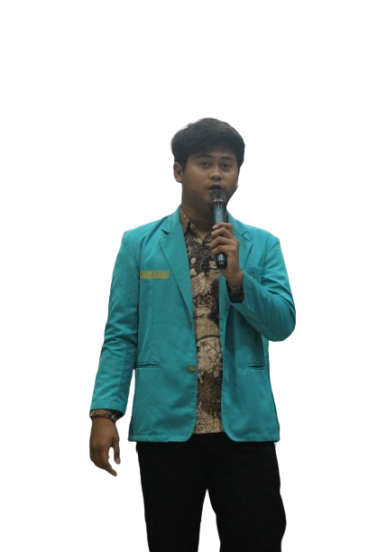
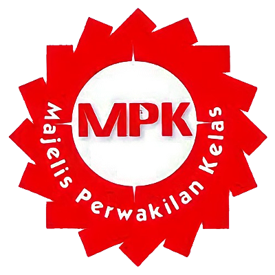

Undergraduate
As a beginner programmer. I was born in the city of Kudus in May 2005. I am currently studying for a master's degree at the Bachelor of Communication Program at the Muhammadiyah University of Surakarta. I am disciplined, honest, confident, persistent, goal-oriented, and have good public speaking skills.
As the Staff of Science and Research at HIMATIF UMS. I am responsible for facilitating academic forums and encouraging student potential in scientific research in the field of Information Technology. My main focus is developing a research culture and designing innovation, to create an environment for students to explore their research interests. Through a collaborative and educational approach, I strive to create a supportive environment for students in developing interests and sharing their knowledge, skills and ideas in research.
As Research and Technology Staff at FOSTI UMS, I am responsible for facilitating academic forums to encourage student potential in information technology. My focus is to develop the desire to continue to know about the use of various programming languages in information technology.

As Head of the MPK Forum Organization SMAN 1 Grobogan, I am responsible for Planning, Organizing, Staff Placement, Coordination, Mobilization, Control, Evaluation. My focus in this MPK is to create human resources who are able to think critically for the progress of this MPK, through this forum is one way to convey aspirations which we can then convey to the school.